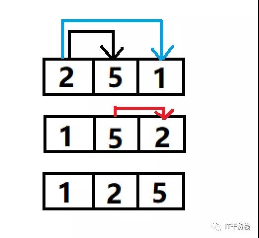
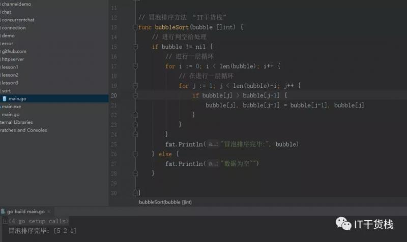
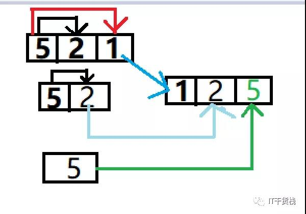
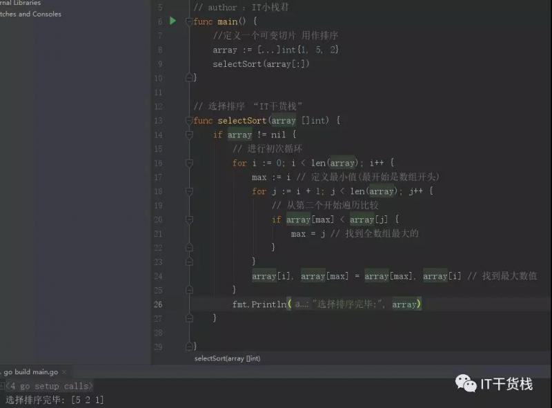
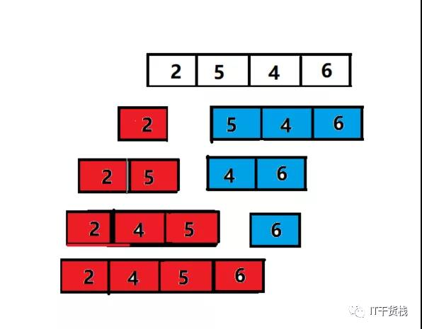
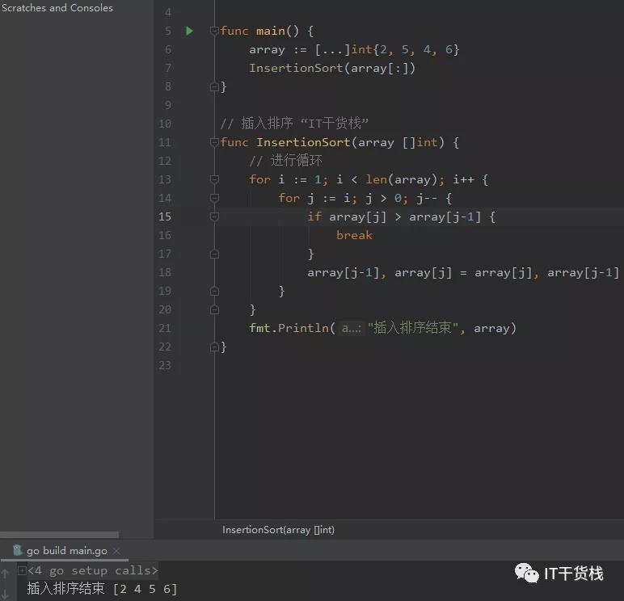
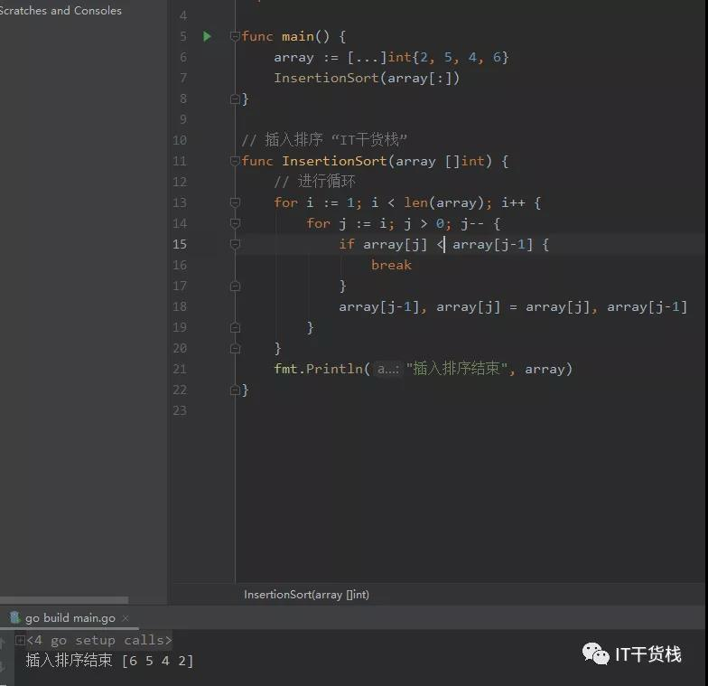
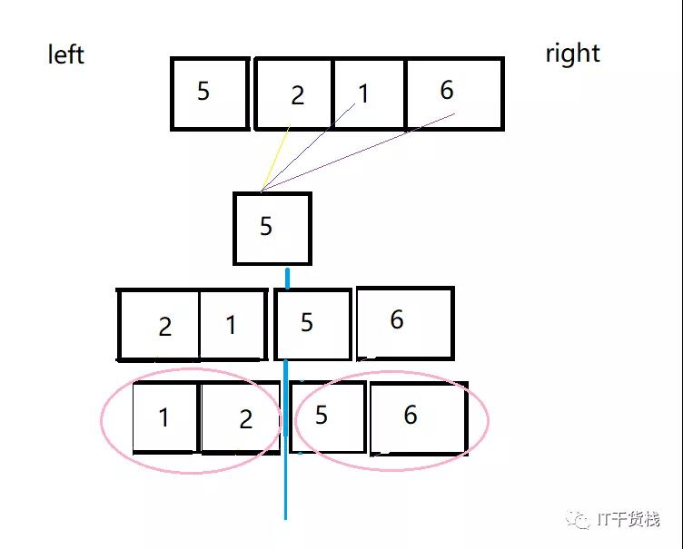
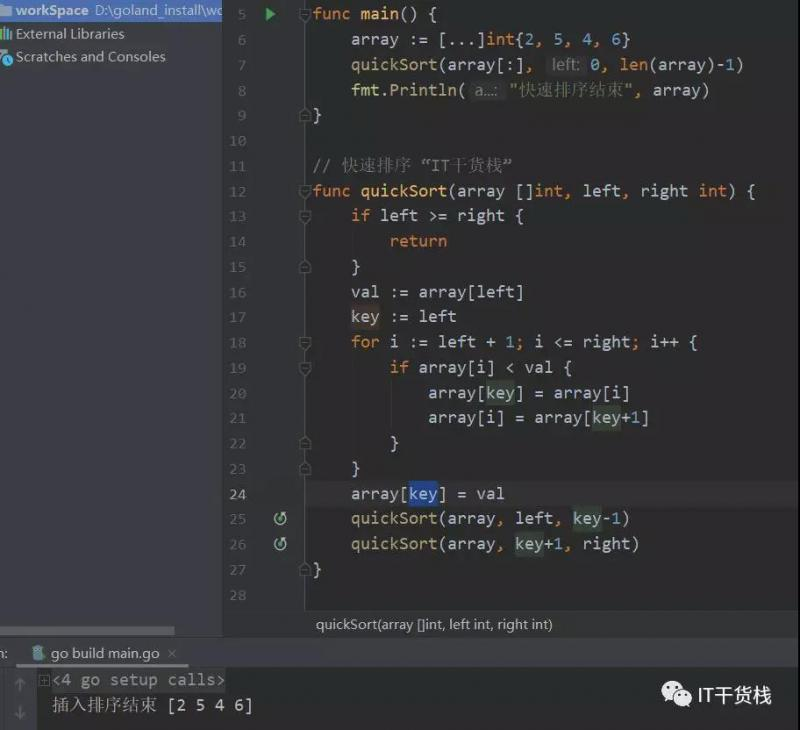

Hello，各位小伙伴大家好，我是小栈君，今天为大家带来的分享是关于go语言中的排序实战浅析。
我们就实际操作关于go的冒泡排序、选择排序、插入排序和快速排序四种方式的理论和实战进行分享，希望能够为大家在学习的路上带来点启发和经验。
排序在我们平时的编程工作中时常可以见到，以按照不同的规则进行排序返回，以便于满足业务的需要。了解和学会编写排序也算是我们在学习编程语言中的算法前进的一小步了，所以呢，小伙伴一起加油吧~
百度百科中有明确的阐述，排序是计算机内经常进行的一种操作，其目的是将一组“无序”的记录序列调整为“有序”的记录序列。分内部排序和外部排序，若整个排序过程不需要访问外存便能完成，则称此类排序问题为内部排序。
反之，若参加排序的记录数量很大，整个序列的排序过程不可能在内存中完成，则称此类排序问题为外部排序。内部排序的过程是一个逐步扩大记录的有序序列长度的过程。
已知一组无序数据a[1]、a[2]、……a[n]，需将其按升序排列。首先比较a[1]与a[2]的值，若a[1]大于a[2]则交换两者的值，否则不变。再比较a[2]与a[3]的值，若a[2]大于a[3]则交换两者的值，否则不变。
再比较a[3]与a[4]，以此类推，最后比较a[n-1]与a[n]的值。这样处理一轮后，a[n]的值一定是这组数据中最大的。再对a[1]~a[n-1]以相同方法处理一轮，则a[n-1]的值一定是a[1]~a[n-1]中最大的。
再对a[1]~a[n-2]以相同方法处理一轮，以此类推。共处理n-1轮后a[1]、a[2]、……a[n]就以升序排列了。降序排列与升序排列相类似，若a[1]小于a[2]则交换两者的值，否则不变，后面以此类推。
总的来讲，每一轮排序后最大（或最小）的数将移动到数据序列的最后，理论上总共要进行n(n-1）/2次交换。
它所具有的优点就是稳定。但是缺点也是非常明显，就是慢，每次只能移动相邻两个数据。
所以我们用一个例子形象的说明一下冒泡排序的原理，针对于上述可能是对初学者理解起来有点抽象。

以上是一个数组中三个数字，我们先看一下黑色线条，先是第一个数字2和第二个数字5做比较，如果说2比5大的话就交换两个值的位置。
然后是2和1做比较，如果2比1大，相同的交换两个数字的位置，所以我们得到了1、5、2这样的数组，然后又开始进行5和2的对比，5比2大，然后交换位置，至此数据遍历完毕。
得到了1、2、5这样的数组。当然我们也可以制定规则，数字大的冒泡，最终得到的结果就是5、2、1这样的数组。所以我们实现的方式如下图所示：

每一趟从待排序的数据元素中选出最小（或最大）的一个元素，顺序放在已排好序的数列的最后，直到全部待排序的数据元素排完。
也就是在一个数组中我们要依次选择最小的或是最大的数来进行数组里面的值交换，最后得到最终排序好的数组。
这样做的优点就是就是知道执行的次数是n-1次，但是缺点也很明显就是比较次数较多。
用图形表示如图所示：

我们先进行5和2对比，然后和1对比，找到最小的1，然后进行交换位置，此时无序的数组剩下5和2，然后找到最小的2，交换位置。最后将最大的5放入最后的位置。这样就完成了最简单的一个选择排序。
具体代码如下：

已知一组升序排列数据a[1]、a[2]、……a[n]，一组无序数据b[1]、b[2]、……b[m]，需将二者合并成一个升序数列。首先比较b[1]与a[1]的值，若b[1]大于a[1]，则跳过。
比较b[1]与a[2]的值，若b[1]仍然大于a[2]，则继续跳过，直到b[1]小于a数组中某一数据a[x]，则将a[x]~a[n]分别向后移动一位，将b[1]插入到原来a[x]的位置这就完成了b[1]的插入。
b[2]~b[m]用相同方法插入。（若无数组a，可将b[1]当作n=1的数组a）它所具有的优点是稳定和快。
但是比较次数不一定，比较次数越多，插入点后的数据移动越多，特别是当数据总量庞大的时候，但用链表可以解决这个问题。
如果目标是把n个元素的序列升序排列，那么采用插入排序存在最好情况和最坏情况。最好情况就是，序列已经是升序排列了，在这种情况下，需要进行的比较操作需（n-1）次即可。
最坏情况就是，序列是降序排列，那么此时需要进行的比较共有n(n-1)/2次。插入排序的赋值操作是比较操作的次数加上 (n-1）次。平均来说插入排序算法的时间复杂度为O(n^2）。
因而，插入排序不适合对于数据量比较大的排序应用。但是，如果需要排序的数据量很小为量级小于千，那么插入排序还是一个不错的选择。

所以我们用图像的形式描述的话，原始数组是一个需要进行排序的数组，我们可以将数组的第一个元素当成一个单独且有序的数组A，然后剩下的元素形成新的数组C依次进行对比。
如果发现C中有元素比A中大就按照指定的规则插入元素的左侧(或右侧)。直至对比到C数组中的最后一个。此时A中的元素都是有序的数组。
代码如图所示：


快速排序是大家已知的常用排序算法中最快的排序方法。已知一组无序数据a[1]、a[2]、……a[n]，需将其按升序排列。
首先任取数据a[x]作为基准。比较a[x]与其它数据并排序，使a[x]排在数据的第k位，并且使a[1]~a[k-1]中的每一个数据<a[x]，a[k+1]~a[n]中的每一个数据>a[x]。
然后采用分治的策略分别对a[1]~a[k-1]和a[k+1]~a[n]两组数据进行快速排序。
它所具有的优点属于极快，数据移动少。当然存在的隐患就是不稳定。

所以结合图片分享可能会更好容易理解一点。在一个无序的数组中，首先我们确定一个初始值，假定为我们取值为第一个，然后对整个元素进行遍历，将小于5位置排在左边，将大于5的排在右边，此时就分为左右两个阵营。
然后我们将两个阵营的元素各自再进行排序，最终就得到了我们排序好的数组啦。
具体代码如下图所示：

当然，这里也是可以不用传左右边界，我们可以默认为初始值左边界为0,右边界为len(array)-1。
好了，今天的分享就到这啦，如果你喜欢我的分享，麻烦你点击一个好看或赞，我是小栈君，不定期分享IT干货，包括但不限于区块链、大数据、Python、go、等系列专题。原创不易，更新较慢，多多包涵。希望与你共同成长。我们下期再见啦，拜了个拜~